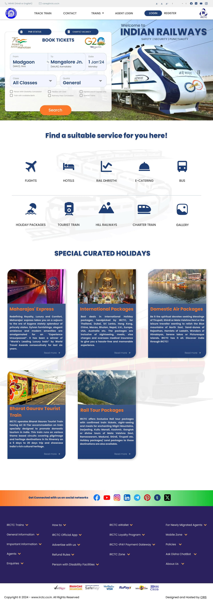

Task hierarchy
Each bar is the full length of the page. The filled part is where that task lives.
From, To, Date, Class, Quota and one Search button.

PNR Status and Charts/Vacancy on the card; Track Train in the menu.
Ten shortcuts: flights, hotels, bus, catering and six more.
Five cards to read, each ending in Read more.
Refund rules, agents, policies and 16 more link groups.
The dashed red line marks 1,080 px, the bottom of a full HD screen. Positions are measured on the design; the ranking of tasks is my own reading, with no usage data behind it.